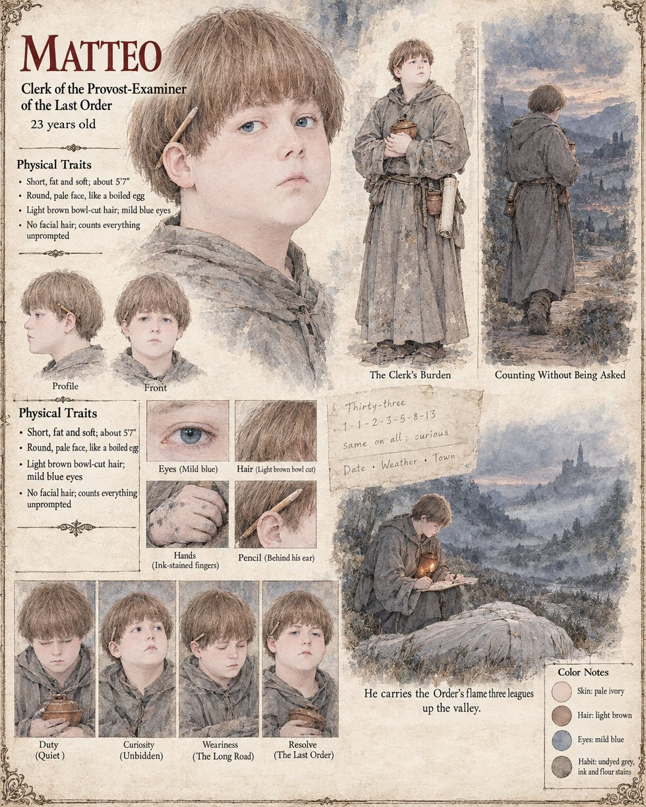

Matteo
Clerk to the Provost-Examiner of the Last Order · a baker's son from the hills behind Montclar · 23 years old
A fat, pale young man with a face like a boiled egg, twenty-three, a baker's son from the hills behind Montclar who joined the Last Order for the sake of its ovens and counts everything unprompted: a sack, a stair, a flock of sheep, a row of loaves. For fifteen days at the Narrow he carries the Order's flame, kindled each noon at the focus of the ground lens on the flat roof of the inn at Vilarnau, three leagues up the valley in a small covered clay lamp pressed against his chest like a baby, glancing down at it every dozen paces with the anxious tenderness of a young father, and never lets it go out. He keeps the labor-tally in a fair hand every evening; he enters the leakage of the first day at three in a hundred and is told by the bailiff to enter it at two.
On the morning of the twenty-seventh of Havren he climbs a barrel in the shadow of the Provost's platform and counts the pale rings on the dead: forty, a hundred, thirty-three bands on each, in the order one, one, two, three, five, eight, thirteen, the nursery progression his mother used to teach him to add. He thinks nothing of it that he would say to a Provost, since a baker's boy knows what it means when every loaf in an oven comes out alike, and writes in the margin of his roll in pencil same on all; curious. On the night of the twentieth of Iverin he comes in at a sound with a candle and sees the Provost on the floor; he sits against the wall in the dark until morning, says nothing then or ever, and in the grey takes the day's roll and writes in its margin, where the Order's rule allows only a number, the date, a word for the weather, and the name of the town. He does not strike it out, though he is a young man with a living to make. The Order's system files it with the rest. The manuscript gives his age, his bakery and his pallor; the sheet's bowl-cut light brown hair, mild blue eyes, ink-stained fingers and pencil behind the ear are its own.
“Same on all; curious.”
Appears In

Related Subjects


Related Records
![Sunrise in a gorge: a cliff face four hundred feet high covered ledge by ledge with dead red grasshoppers gripping the rock with wings spread, lit gold by the low sun, a bright beam from a great glass lens on a tripod on a plank platform under a grey awning falling on the wall, a dark-robed man and a pale young clerk at the lens, a red-robed man kneeling among kneeling peasants in the gravel, and in the foreground a lean man in a dark robe with a sword held down along his leg holding up one stiff red body beside a young woman with a braid in a white blouse and blue skirt who looks up, the gravel strewn with the dead](../images/scenes/the-dawn-wall-grid.jpg)
On the morning of the twenty-seventh of Havren the Dawn Wall hangs with the dead, and Tomobe no Higaide holds one up and says inago to Gersenda, while Ottavio Brandi and Matteo turn the ground lens on the wall and the Hierarch Odilo kneels in the gravel.